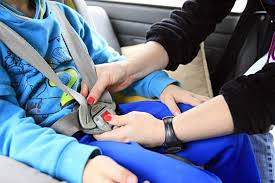
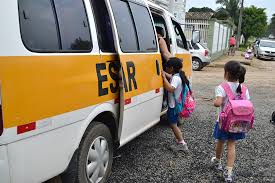
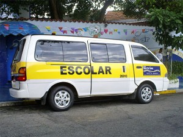
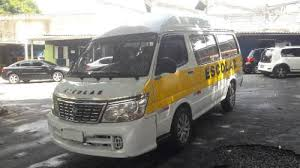

Oferecemos serviço de transporte escolar, o veículo é registrado junto ao DETRAN e submetido à inspeção pelo menos duas vezes ao ano, quando serão verificados os itens obrigatórios como cintos de segurança e retrovisores, entre outros.
Nosso serviço é indicado para os residentes de grandes centros urbanos que, além de precisar encontrar tempo para levar os filhos à escola, também sofrem com o estresse do trânsito nos horários de pico. Se você se encontra nessa etapa, nosso serviço é ideal para você! Entre em contato conosco através do menu, na opção fale conosco. Ou se preferir mande um e-mail(dados para contato no rodapé da página).
Apesar de não ser exigido por lei, com condutores responsáveis e comprometidos com um transporte escolar seguro e de qualidade sempre contamos com um monitor (ajudante) para gerenciar o fluxo de crianças no veículo e também verificar se todos estão usando o cinto de segurança.

Conduzimos as crianças usando o cinto de segurança! |

Ajudamos as crianças para colocarem os cintos de segurança! |

Organizamos a entrada de crianças no veículo! |
| 
Veículo inspecionado! |

Conduzimos as crianças com segurança e pontualidade! |
Pagamento em dinheiro ou Deposito! Banco : Bradesco Agência : 2474-0 Conta Poupança : 1006649-2 Cpf : 041.852.738-51 |